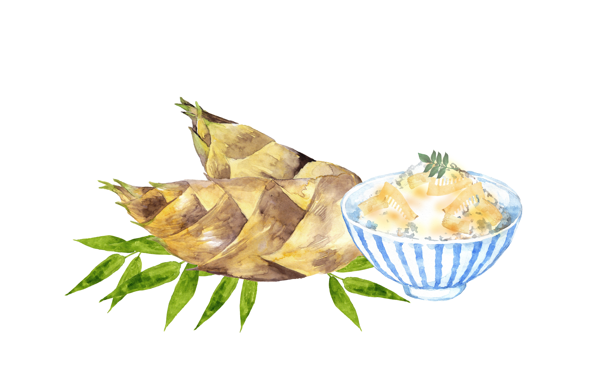
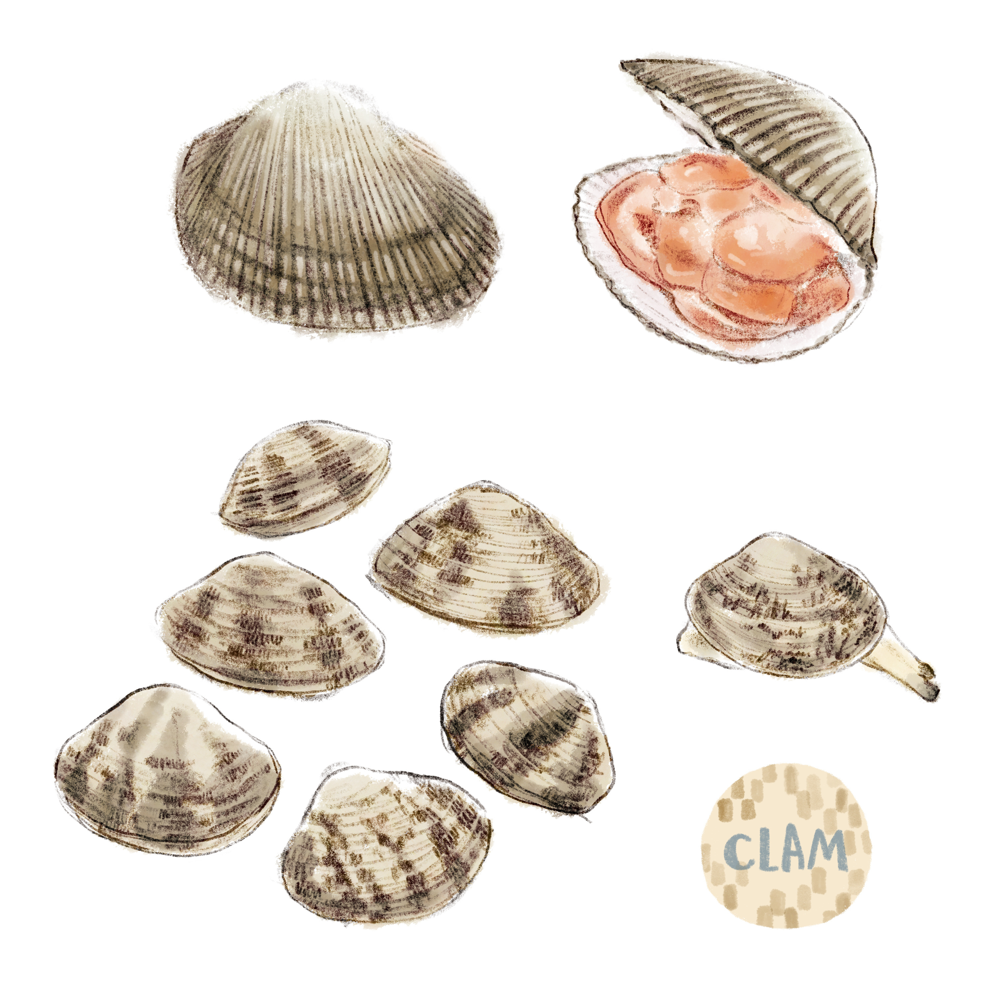
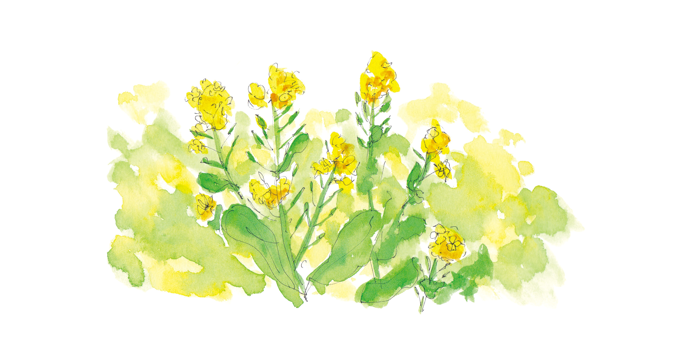

春に食べたい料理5種
たけのこ料理
たけのこは、竹の新芽であり、日本の春の風物詩の一つです。春になると、竹の根元から新しい芽が出始めます。これがたけのこの始まりで、成長するにつれて、竹から顔を出す、美味しく、栄養価の高い食材になります。たけのこの成分は、食物繊維、ビタミンB群、カリウム、マグネシウム、カルシウムなどが豊富で、健康にも良いとされています。また、低カロリーであり、ダイエット食材としても人気があります。
あさりのお吸い物
あさりのお吸い物は、和食の定番料理の一つで、素朴な味わいと、あさりの旨味を存分に楽しむことができる料理です。あさりは、砂浜などの浅い海で生息しており、身が小さいため、調理がしやすく、味も深くなるのが特徴です。また、あさりには、ミネラルやアミノ酸、鉄分が豊富に含まれているため、健康的な食材としても知られています。
菜の花の天ぷら
菜の花の天ぷらは、春の季節にぴったりの軽食やおつまみとして楽しめます。また、素材の風味が生きた、シンプルな味わいが魅力で、天ぷらにすることで、香ばしくサクサクとした食感が加わり、更に美味しくなります。天つゆやポン酢などと一緒に食べると、さっぱりとした味わいに仕上がります。
山菜ごはん
山菜ごはんは、日本の春の味覚を楽しめる料理のひとつであり、春に山に登り、採れたての新鮮な山菜を使って作るおにぎりやお茶漬け、炊き込みご飯など、様々な料理があります。山菜には、豊富な栄養素が含まれており、ビタミンやミネラル、食物繊維などが豊富で、健康にも良い食材として注目されています。

さくらんぼスイーツ
さくらんぼを使ったスイーツには、さくらんぼのシロップ漬けやジャム、タルト、パフェなどがあります。シロップ漬けは、さくらんぼを砂糖水に漬け込んで作るもので、甘酸っぱいさくらんぼの風味が楽しめます。日本のさくらんぼは、栽培方法や品種によって収穫時期が異なりますが、主に4月下旬から6月上旬にかけて収穫されます。早生種から遅生種まで、約100種類の品種があります。